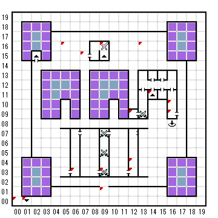

【 x：0，y：0 】
B1Fから
【 x：1，y：0 】
B1Fへ
【 x：5，y：16 】
君は、城の周囲に作られている
壮大な泉のうちの一つを見つけた。
その横に建てられている表示には、
こう書かれている。
”修理中のため閉鎖しております。”
”遊泳禁止！”
”芝生立ち入り禁止！”
＊MAINTENANCE CAP装備
MAINTENANCE CAPは、
徐々にそのプールを直すための知識を
君に教え込んでいった。
君は、城の周囲に作られている
壮大な泉のうちの一つを見つけた。
その横に建てられている表示には、
こう書かれている。
”プール営業中。”
”監視員監視中。”
しかし、どこにも監視員の姿は見当たらなかった。
入ってみるか（Y/N）
水に飛び込んだとたん、君は今までになく
体中が清められたような感覚にとらわれた。
そして、そこから出るときには、全身健康
そのものといった気分になっていた。その君の
、見違えるほど清潔で、花のような香りまで
漂わせた姿を見た配下の魔物どもは、
恐れをなして君の前から逃げ出した！
2回目
気持ちはよかったものの、特に何か
変わったような気はしなかった・・・
【 x：6，y：3 】
THE EDGE OF TOWN
【 x：7，y：15 】
高い塔が君の目の前にある。
それは白のもの見の党。
【 x：9，y：16 】
HORN
【 x：9，y：3 】
THE TRAINING GROUNDS
【 x：9，y：1 】
ギリシア風の兵隊が、君に近づき
敬礼をしながら、ちょっとアテネ風の
ラテン語でこういった。
”ここを通るための合言葉をどうぞ！”
【 x：12，y：9 】
二つのボタンがある
A と B という印がついている
どちらを押すか？（Enterを押せばどちらも押さないことになる）
Aは1Fの12,9
Bは2Fの12,9
【 x：12，y：4 】
ここが、かの有名なBOLTACの店
しかし残念のことに、たとえミスリルで
支払おうとも君のような輩には「、何も
売ってはくれまい！
フム・・・あれは伝説に名高い
アーチメージフレッドの 墓地の門
じゃないか？たしかあれは、真に
邪悪な者の手にあれば、城をも 崩壊
させる力を持つとか・・・（ニヤリ）
君は墓地の門を盗もうとした（Y/N）
Y→
戦闘になる（すげえ強い）
倒しても何ももらえない
【 x：12，y：3 】
BOLTAC'Sへようこそ
【 x：13，y：16 】
君は、城の周囲に作られている
壮大な泉のうちの一つを見つけた。
その横に建てられている表示には、
こう書かれている。
”プール営業中。”
”監視員監視中。”
しかし、どこにも監視員の姿は見当たらなかった。
入ってみるか（Y/N）
水に入ったとたん、君は何か
いやな予感に襲われた。
そして、突然、今までの悪行が
重石のように、君の両肩に
のしかかってきた！
→EVILになる。
2回目以降
気持ちは良かったものの、特に何か
変わったような気はしなかった・・・
【 x：14，y：11 】
2F(14,12)へ
【 x：16，y：10 】
THE ADDVENTURER'S INN
ミシュランガイドで星1/2!
VISA, MORDER CHARGEでのお泊りも受け付けます！
【 x：16，y：9 】
宿の入り口は閉まっている。
大きな銅製の鍵がないと、中
には入れないみたいだ。